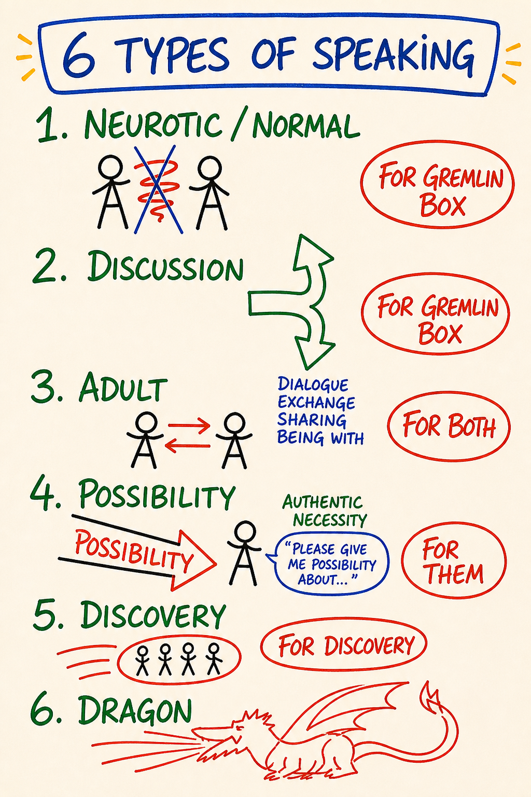

Day 8 — Listening · Speaking · Communication · Completion Loops
| Intensity | MEDIUM |
|---|---|
| Time | ~2.5 hours active across 3 days |
| Partner check-in required before? | Partner reachability required in the 48-hour exchange window — this module is the partner exchange. No pre-module check-in required. |
| Source videos | 10 - 4Listenings_EN.mp4 · 11 - Speakings_EN.mp4 · 17 - MapofCommunication_EN.mp4 |
| Maps (taught in this module) | M14 4 Listenings · M15 4 Speakings · M16 Map of Communication — each also a standalone interactive tool in the Map Atlas |
Grounding (60 seconds). Top of
03 - Safety and Facilitation Framework.mdSection D. Read it now. You will use it inside this module.
Purpose
To make visible how you use listening and speaking to shape, control, avoid, or open the space between you and another person.
Day 8 is where the inside of the work (Box, feelings, drama) meets the outside — another human being. Most maps so far you have used on yourself. From Day 8 on, you use them in the space between you and another person. That space has its own architecture and you have been navigating it for a lifetime without seeing it.
You will catch the Box and the gremlin using your ears and your mouth, then practice Adult and Possibility moves that complete communications instead of leaving energetic debt.
Day 8 is tagged Medium intensity not because the material is conceptually hard but because doing this with your actual partner, on your actual material, lands closer to the bone than reading any map. Several learners report Day 8 as more demanding than the feelings modules — not because anything overflows, but because being met cleanly is unfamiliar.
Core PM concepts
- The 4 Listenings. Four distinct stances a listener can take: listening to confirm what you already think · listening for what the other person means · listening to what is being said · Possibility Listening.
- The 4 Speakings. Four parallel speech locations: speaking from the gremlin · speaking from the Box · speaking from Adult · Possibility Speaking.
- Map of Communication. The architecture of any exchange: intention → speaking → receiving → meaning-making → response. Gaps open at every join.
- Completion loops. The discipline of finishing a communication so it is not left as energetic debt that surfaces in the next argument.
- The 12 Roadblocks. Thomas Gordon's named list of what learners do instead of listening. A roadblock is defined by function, not by intention — if your move redirects the speaker, relieves your discomfort, positions you above them, closes uncertainty, or pushes toward a result, it is a roadblock. Good intention does not clear it.
- Vacuum listening space. The internal state of a Possibility Listener — empty of opinion, expectation, agenda, judgment, and even the need to understand. Still there. Just out of the way.
- Meta-conversation. Naming the conversation about the conversation. The single most useful move when a communication is stuck.
Learning outcomes
By the end of this module you will:
- Be able to name and identify in your own listening which of the 4 Listenings is operating at any moment.
- Be able to name and identify in your own speech which of the 4 Speakings you are sourcing from.
- Be able to walk the Map of Communication in both directions — from speaker to listener and from listener back — and locate at least two places gaps tend to open in your own communications.
- Have run at least one completion loop with your pairing partner during the partner exchange, and one in your actual life during the between-module experiment.
- Have caught yourself, in real time, doing at least three of the 12 Roadblocks instead of listening.
Module flow
| Step | Time | What you do |
|---|---|---|
| 1 | 10 min | Read this header. Confirm your partner is reachable in the next 48 hours. |
| 2 | 12 min | Watch 10 - 4Listenings_EN.mp4 |
| 3 | 10 min | Watch 11 - Speakings_EN.mp4 |
| 4 | 12 min | Watch 17 - MapofCommunication_EN.mp4 |
| 5 | 35 min | Read Concept teaching notes below, slowly — study each map image where it sits, and do the voice-memo micro-practice inline |
| 6 | 15 min | Listening posture practice (solo, embodied) |
| 7 | 45 min | Partner exchange (the core of the module) |
| 8 | — | Receive partner's reply within 24 hours; record yours back |
| 9 | 2 days | Run the between-module experiment — one real completion loop |
| 10 | 20 min | Journal the reflection prompts |
| 11 | 1 min | Post one line to the cohort feed |
Spread the module across three days. The partner exchange is not bolted on at the end of the module — it is the module. Schedule it.
Concept teaching notes
The 4 Listenings

▶ Explore M14 as an interactive tool in the Map Atlas →
Study the map before reading on. Four distinct places a listener can stand inside — and the load-bearing claim is that the place you stand from, not the words the speaker says, determines what you actually hear. You are running one of these right now. The first three exist in many traditions; the fourth, Possibility Listening, is the PM-distinctive one the course is teaching toward.
Listening to confirm what you already think. The most common, and the most invisible from the inside. The other person speaks; you run their words through your existing thoughtmap, keeping what fits and silently filtering the rest before it reaches awareness. You hear what confirms. You miss what disconfirms. You respond to a pre-shaped version of what was said. This is what most adults do most of the time, and it is undetectable from the inside because the filter is the thing through which you are detecting. Sourced from the Box.
Listening for what the other person means. A step better. You paraphrase, check accuracy, ask do you mean X? This is Adult Listening — the listening of most therapy, of Rogerian counseling, of NVC. Useful. Also limited: while you are paraphrasing, you have stopped listening. You are constructing a sentence. Asking the next question shapes where the speaker can go next. You are still in your head; you have just made the head a more accurate one.
Listening to what is being said. Harder than it sounds. You let the actual words land — not the meaning, not your interpretation. The words themselves, in their actual order, with their actual sounds. You notice the speaker said I left him and not we broke up, and you do not translate. Many learners discover, when they first try this, how rarely they have been doing it — that they have spent decades hearing meanings and not words.
Possibility Listening. The PM-distinctive one. You stop listening for anything. You become a clean workbench on which the speaker can lay out thinking, sensing and feeling without it needing to be reasonable, logical or understandable. You do not nod. You do not smile. You do not say yes. (Nodding and smiling, in PM's analysis, are unconscious reinforcement — you train the speaker, with every nod, to stay in the parts of their speech you are comfortable with.) A small neutral sound confirms you are present. Otherwise, zero resistance. No reaction, no comment, no question. The speaker enters a space they almost never enter — being heard without being shaped. Sourced from the bright principle of possibility (Day 10), not from analysis.
Live-training phrasing: "You are a yes for them. You are there for them."
The fourth listening sounds passive. It is not. Holding a vacuum listening space takes more of you than running a paraphrase. The Box wants to comment; the gremlin wants to fix; the Adult wants to be helpful. Holding the space requires noticing each impulse and letting it pass — listening to what wants to come into being through this speaker that neither of you has yet named.
Do not confuse this with empathic listening or NVC reflection. They overlap on the surface. Underneath, empathic listening accurately mirrors what the speaker said; Possibility Listening holds a space the speaker can speak into, with no commitment to mirror anything back. The first serves accuracy. The second serves emergence.
The whole map exists for one purpose: to make the listening a choice. You can switch mid-conversation. The map is operational only when you are using it — until you can name which listening you are running, you cannot choose it.
Common misunderstandings about the 4 Listenings.
- "I'm a good listener — I nod, I make eye contact, I say mm-hmm." Those are reinforcement signals. They train the speaker to stay in the parts of their speech you are comfortable with. Possibility Listening explicitly drops them.
- "If I'm quiet and not interrupting, I'm doing Possibility Listening." Quiet on the outside, busy on the inside is still the confirming or meaning listening. The vacuum is internal — the absence of all internal construction, not just the absence of speech.
- "Possibility Listening is the best one and I should always do it." Each of the four is a real move with a domain. Adult conversation at work usually needs the meaning or literal listening. The work is not to always be in the fourth; it is to know which one you are doing and be the one choosing.
- "Possibility Listening is something you do to the speaker." It is something you do with yourself — you clear the internal space so the speaker has somewhere to go. The speaker may or may not notice. The point is the space, not the performance of holding it.
The 4 Speakings

▶ Explore M15 as an interactive tool in the Map Atlas →
Study the map before reading on. Speech, like listening, has locations — and symmetrically to the listening map, where you speak from, not what you say, determines what the speech does in the room. The same sentence said from the gremlin and from Adult are not the same speech act. You have been speaking from one of these for the last hour and may not have noticed which. (The course teaches four speakings; this PM map shows the fuller set of six — Neurotic/Normal, Discussion, Adult, Possibility, Discovery, Dragon — with what each is "for." The four named here map directly onto it.)
Speaking from the gremlin. Drama, righteousness, manipulation, provocation, juicy negativity. The gremlin loves to talk — other people's failings, your own grievances, what is wrong with the world. Gremlin speaking is recognizable by its charge — there is heat under it, and the heat is the point. The gremlin is eating while you speak. You can usually feel it in your chest if you check.
Speaking from the Box. Defended position, performance, opinion-as-identity. The Box speaks to maintain itself. It speaks for victory, not for truth. Box-speech often sounds reasonable — that is part of its design. The tell is that it cannot bend — disagreement registers as attack.
Speaking from Adult. Clear, contractual, responsible. Adult speech does seven things well: passes cognitive information, shares feelings, makes distinctions, declares, asks for something, agrees or disagrees, sets borders. Most professional life runs on Adult speech, and most marriages and friendships benefit from more of it.
Possibility Speaking. Speech sourced from a bright principle — possibility, creation, truth-telling — that brings a new context into being that was not in the room a minute ago. Not brainstorming, not "thinking out loud." Speech that lands a distinction the listener did not previously have, opens a door that was closed, makes available what was not available. Requires that the bright principle be active in the speaker — which is why this map points forward to Day 10.
Live-training phrasing: "You speak before you think, out of the bright principle of the unknown. You create distinctions, new perspectives, and possibilities."
The four speakings are the structural parallel of the four listenings — and they pair. Gremlin speech wants gremlin listening (someone to react). Box speech wants confirming listening (someone to agree). Adult speech wants meaning-listening. Possibility Speaking is met by Possibility Listening — both require the same internal infrastructure: liquid state, holding context, being sourced from being rather than from Box or gremlin. You cannot Possibility-Speak from a defended position, and you cannot Possibility-Speak with a gremlin running the speech. This is why a communication can fail even when the words are clear: you may be Possibility-Speaking to a confirming-listening, or Adult-Speaking to a gremlin-listening. Speech and listening have to match.
The highest form of Possibility Speaking is a declaration. I declare. Not a prediction, not a hope, not a wish, not a promise or a goal — a spoken act that brings something into being by being spoken, and is then followed by behavior consistent with what was declared. I declare we will finish this by Friday is only a real declaration if the speaker then stands in it with their actions. Without the bright principle active, "I declare" is grandiosity; with it, it is a real move. Day 10 unpacks declaration in detail.
Each of the four is a real move and has its domain. The work is not to "always speak from Possibility" — it is to know which one you are doing, in real time, and to be the one choosing.
Common misunderstandings about the 4 Speakings.
- "I can tell which speaking I'm in by what I'm saying." Content does not tell you the location. I love you can be gremlin-speech (manipulation), Box-speech (performance), Adult-speech (cleanly reporting an internal state), or Possibility Speaking (bringing a new context into the relationship).
- "Possibility Speaking is just brainstorming or thinking out loud." Brainstorming generates ideas inside an existing context. Possibility Speaking changes the context the ideas were going to come out of. They look similar from outside; they are different acts.
- "Adult is boring, Possibility is exciting, so I should speak from Possibility most of the time." Adult is the workhorse — it runs most of life that functions. Possibility Speaking is rare, costly, and only real when the bright principle is active. Faked, it is just more Box.
- "Speaking from the gremlin is bad and should be eliminated." The gremlin will be with you for life. The work is not elimination — it is knowing when you are speaking from it, and choosing whether to.
The Map of Communication

▶ Explore M16 as an interactive tool in the Map Atlas →
Study the map before reading on — the circuit and its joins are drawn there. Any communication, no matter how simple, runs the following circuit:
Speaker has an intention → speaker encodes it into speech → listener receives the sound → listener decodes sound into meaning → listener responds → and the response runs the same circuit back.
At every arrow, a gap can open. The gap is not the exception; it is the structural fact. Five named joins, five gaps:
- Intention gap. The speaker has not located why they want to say it. The speech is muddy at the source.
- Encoding gap. The speaker is clear about the intention but does not have words that carry it. They reach for a phrase that approximates and hope the listener fills in the rest.
- Reception gap. The listener was running the first listening (confirming) or constructing their reply.
- Decoding gap. The listener heard the words but mapped them onto their own thoughtmap. Same words. Different meanings.
- Response gap. The listener responds to a constructed version, which is then received through the speaker's filter, and the gap compounds.
After three turns of this, most "communications" are two parallel monologues touching only at the surface. Both participants feel unheard. Both file the incident as more evidence that the other person doesn't get me.
This account is structural, not relational — it is not about whether the people are good or bad communicators. The circuit is the same one Shannon-Weaver named decades ago; what PM adds is the account of what determines whether the gaps open. A reception gap is not a transmission failure — it is the listener running the confirming listening. This is exactly why the Map of Communication sits downstream of the 4 Listenings and 4 Speakings: the gaps are the upstream maps showing up in the space between two people. Named failure points can be repaired by a named practice.
The single most useful move when a communication is stuck is the meta-conversation — stopping the content and having a brief conversation about the conversation. From the live training: "I'm going to pause here because I'm going to have a meta conversation with everybody, which is a conversation about the conversation." It pulls back from the content and makes the structure visible, so the participants can choose where to re-enter cleanly.
Completion loops
Most arguments do not end. They pause until next time. The same fight, in a marriage, can run for a decade — the content varies, the structure is identical, because the underlying communication was never completed. Incomplete communications accumulate as energetic debt — and that debt is gremlin food. The gremlin loves the unsaid.
A completion loop is the discipline of finishing a single communication so cleanly that there is nothing left over. The steps:
- Speaker speaks. Says the thing.
- Listener reflects. Paraphrases back, in their own words, what the speaker wanted received — until the speaker confirms it landed accurately. (Note the precision: not "the part that landed for me" — that is a listener-centered move dressed as listening. The target is what the speaker meant to convey.)
- Speaker confirms or corrects. Yes, that's it. Or: No, what I meant was X. If correction, listener reflects again. Loop until clean.
- Listener acknowledges. I got it. Not agreement — receipt.
- Both name the conversation as complete. Out loud. Are we complete on this? Yes.
It feels formal the first three times. Then it becomes a reflex — "Got it. We good?" "Yeah, we're good." is a completion loop in three sentences. The formality is the price of precision. Pay it.
Step 5 is the load-bearing piece, and it is what makes the loop PM-distinctive. NVC's reflective listening and the Carkhuff/Gordon Active Listening tradition both teach the paraphrase in step 2 — that part is not new. What PM adds is explicitly naming the conversation as complete, out loud, with words. Without that sentence, even a beautifully paraphrased exchange can leave residue. With it, residue cannot accumulate. The explicit close is the work.
Retroactive completion loops are real. You can run one on a conversation from last week, last year, or last decade. The original conversation does not need to be replayed; the unfinished piece is what gets named, reflected, confirmed, acknowledged, and closed — now. The opener — "Small thing from last month I want to circle back on, two minutes, nothing dramatic" — is the move. The other person does not need to know the framework. The loop you can close, you close. Their part is theirs.
Completion loops are how PM works at the relational level. They are what makes feedback usable, conflict survivable, intimacy possible. Without them, every conversation leaves a residue — and the residue is what people are actually living inside when they say their relationship is exhausting. The exhaustion is the unfinished arc.
Common misunderstandings about communication, completion loops, and energetic debt.
- "Completion loops are formal and stilted — they'll ruin natural conversation." They feel formal the first three times, then go invisible. Most of the time the loop is over in two sentences and no one but you knows it happened.
- "I can't run a completion loop with someone who doesn't know the framework." You can. They do not need to. You initiate, speak cleanly, ask them to reflect back. If they cannot — "I don't know what you want from me" — that is data too.
- "Energetic debt is just a metaphor." It is observable. Walk into a room where two people have been silently carrying a three-year-old unfinished conversation and you can feel it before either speaks. The debt has weight. The completion loop pays it.
- "Once a conversation is past, it's past — retroactive completion is fake." Retroactive completion recovers years of accumulated debt. The unfinished piece is what gets closed now; the old conversation does not get replayed.
The 12 Roadblocks
Thomas Gordon catalogued twelve things people do instead of listening when listening would actually serve. PM adopted the list because it is comprehensive and because every learner does most of them daily.
- Ordering, directing. Stop crying. Calm down.
- Threatening. If you keep talking like that, I'll leave.
- Moralizing, preaching. You should… You ought to…
- Advising, giving solutions. What I would do if I were you is…
- Lecturing, giving facts. Statistically, what you're describing is…
- Judging, criticizing, blaming. That was selfish of you.
- Praising, agreeing to control. You're so strong, you've got this. (When the function is to redirect the speaker, not to honor them.)
- Name-calling, ridiculing, shaming. That's ridiculous. Don't be a baby.
- Interpreting, analyzing, diagnosing. I think what's really going on is that you have abandonment issues.
- Reassuring, sympathizing, consoling. Don't worry, it'll all be fine. (Often deployed to end the speaker's discomfort because the listener can't hold it.)
- Probing, questioning, interrogating. When did this start? Why did you do that? What were you thinking?
- Distracting, diverting, withdrawing. Anyway, how was your day? Changing the subject. Going on your phone.
These are not "bad." Most are normal, helpful-seeming, well-intentioned moves — what your friends do when you are upset. Most have a domain where they are appropriate. The point is not to feel guilty about them; the point is to notice that doing any of these is not listening, and when listening was what served, the roadblock got in the way.
Reassuring a friend in pain often serves the listener's discomfort more than the friend's process. Naming that you reassured is not naming that you are a bad friend. It is naming that, in that moment, the move was not the move that served.
The 12 Roadblocks are also data about your Box. The roadblock you reach for first under pressure tells you which survival strategy your Box runs. Compulsive advice-givers have a different Box than compulsive interrogators have a different Box than compulsive reassurers. Watching which roadblock leaps to your mouth is a free X-ray of your Box's habits.
A roadblock is defined by function, not by intention. This is the load-bearing test, and it is why good intentions do not clear a move off the list. Advising is appropriate when someone asked for advice; it is a roadblock when it redirects a speaker who needed to be heard. Reassuring is appropriate when reassurance is what serves; it is a roadblock when it ends the speaker's discomfort because you cannot hold it. The same words can be a roadblock in one moment and the right move in the next. Do not ask did I mean well? — ask did this move serve the speaker, or relieve me?
Common misunderstandings about the 12 Roadblocks.
- "These are unhealthy communication patterns I should never do." Most are normal, helpful-seeming moves with a real domain. The list is for the moments when listening was what served and a roadblock got in the way instead.
- "Reassuring a friend in pain is kind — it can't be a roadblock." Reassurance is one of the twelve. The question is whose discomfort it serves. Naming that you reassured does not mean you are a bad friend; it means, in that moment, the move was not the move that served.
Embodied practice (solo) — Listening posture
A single practice. ~15 minutes. Done alone in a room you will not be interrupted in. You will need: a chair, headphones or speakers, and a 5-minute audio of your own choosing — a podcast monologue, a voice message from a friend, a song with lyrics that matter to you. Pick something with a real human voice carrying real content. Do not pick a meditation track. This is a listening practice, not a meditation.
Read the script through once before you do it.
Script.
Sit. Both feet on the floor. Hands resting on your legs, palms down. Spine upright but not rigid. Eyes soft or closed.
Three slow breaths, exhale longer than inhale.
Start the audio.
Minute 1 — Listening to confirm. Listen the way you usually listen. Notice what you are doing. Notice the running commentary in your head — agreeing, disagreeing, predicting, comparing, remembering. Do not try to stop it. Just see it. This is your default. Name it: I am running the confirming listening.
Minute 2 — Listening for what they mean. Shift. Now you are trying to track the speaker's actual meaning. Mentally paraphrase. What they mean is X. Notice that you are now constructing — you are not really listening anymore, you are translating. Name it: I am running the meaning listening.
Minute 3 — Listening to what is being said. Shift again. Drop the paraphrase. Let the actual words land — the specific words, in their order, with their actual sounds. If a word repeats, notice. If a word is unusual, notice. The words themselves, not what they mean. This is harder than it sounds. The mind will keep trying to interpret. Bring it back to the words. Name it: I am running the literal listening.
Minute 4 — Possibility Listening. Shift again. Drop the words. Become a vacuum listening space. The speaker is speaking; you are simply there, holding open space inside which the words happen. No interpretation, no paraphrase, no commentary. If a comment arises in you, notice it pass and let it pass. You are a yes for them. Name it: I am running Possibility Listening.
Minute 5 — Free choice. Let the audio finish. Notice which listening you naturally fall back into when you stop directing.
Stop the audio. Sit for 30 seconds in silence. Notice what changed.
In your notebook, write fast, no editing: which listening was easiest, which was hardest, and what you noticed change in your body across the five minutes. Three or four lines.
What to expect. The first listening is so automatic it was already running before you started. The third (listening to what is being said) is the surprising one — often described as I have never actually done this before. Possibility Listening on a recording feels different from doing it with a live person; the recording does not respond to your held space. That is fine. The practice is the rep.
If feeling arises during the audio — especially with a voice message from someone close — notice it. Listening without filling the gap with reaction surfaces what was waiting under the chatter. Ground if you need to.
Variation B — the four-speaking voice memo (~10 min). The speaking-side companion to the listening practice above. You will need your phone's voice recorder and one topic that is genuinely up in you right now — a current frustration, a decision in front of you, a relationship. Not rehearsed. You will speak the same topic four times, one minute each, from the four locations. Read all four prompts first, then record. (1) From the gremlin — let the charge be there; be righteous, make someone wrong, indulge the heat; notice your chest, jaw, breath. (2) From the Box — defend a position, state opinion as if it is identity, make it sound reasonable, refuse to bend; notice the body tighten. (3) From Adult — here is what is happening, in fact; here is what I feel; here is what I want; here is what I'm asking for; clear, contractual, no charge; notice it go quieter. (4) From Possibility — the hardest; do not perform it; get quiet first, ground, find a bright principle (truthfulness, possibility, creation), then speak whatever wants to come through you about this topic — a new angle, a distinction you had not made, a door that opens; if nothing comes, sit in the silence, because faked Possibility Speaking is just more Box. Listen back. Notice how different the same topic sounds in each location, which was easiest, which hardest, and whether the fourth was actually different or slipped into one of the first three. Write three lines: easiest · hardest · what your body did across the four minutes.
Variation C — completion-loop solo prep (~10–15 min). Run this when you are ready to set up the between-module experiment; it doubles as rehearsal for the real loop. Sit, notebook open, center, ground, drop a bubble. Step 1 — identify one small unfinished communication. Scan the last month for 3 minutes and pick one small item, not the biggest — I told my partner I'd think about the vacation thing and never came back. Write it in one sentence: what was left unsaid or unconfirmed. Step 2 — locate the gap. Walk the circuit. Where did the original break happen — intention, encoding, reception, decoding, or response? Write the gap(s) you can locate. Step 3 — name the roadblock you ran. What did you do instead of the work that would have closed the loop? Ordered, advised, lectured, reassured, interrogated, distracted…? The one you reach for first is data about your Box. Step 4 — draft the opener. Write the actual sentence, out loud once in your own voice: small, low-key, non-dramatic — "Small thing from [time] I want to circle back on. Two minutes. Nothing dramatic," then the unfinished piece said cleanly, then "Can you tell me what landed for you?" Step 5 — name the close. Write and say, out loud, the actual sentence that closes the loop: "Are we complete on this?" Most people have almost never said it; it will feel formal. That is the practice. Step 6 — pick the time. Write a specific 48-hour window in which you will run the loop. Without the time on paper, the gremlin keeps the debt open indefinitely. Close the notebook, stand, three breaths. The live loop happens in your actual life — this is the between-module experiment.
Partner exchange (async) — the core of this module
This is not bolted onto today's reading. This is today. Schedule 45 minutes with your partner — synchronous call if possible, async voice messages otherwise. Both partners read the module before the exchange.
Round one — the 4 Listenings exchange
Partner A speaks for 5 minutes about something genuinely alive for them. Not a rehearsed topic, not a problem to solve. Something up — fresh, unresolved, partly unspoken.
Partner B listens. Vacuum space. No nodding, no smiling, no questions, no comments. Possibility Listening as best they can manage. If they catch one of the 12 Roadblocks running internally, they name it silently and return to the space.
When 5 minutes end, Partner B does NOT respond conversationally. No advice, no commiseration. Partner B replies with exactly three things, in this order:
- "What I heard you say was…" — paraphrase the part that landed. Not the whole thing.
- "What I noticed in myself was…" — witness statement. I noticed sadness in my throat at 10%. An urge to advise. The room got quiet.
- "The question I am leaving with you is…" — one open question, no advice embedded. Lands in the body. What does this want from you? What would you do if you trusted yourself here?
Partner A receives. Does not need to answer. Notes what landed.
Roles reverse. Partner B speaks for 5 minutes. Partner A holds the listening, then replies with the three statements.
Both debrief briefly — one minute each — on: which of the 4 Listenings did I fall into? Which of the 12 Roadblocks tempted me most?
Round two (optional) — Possibility Listening only
If both partners have energy, run a second round: Partner B holds Possibility Listening only, for the full 5 minutes. No paraphrase, no question. At the end, one sentence — "I heard you."
Several learners report that being met by a clean, sustained Possibility Listening surfaces material they did not know was waiting. It can feel intimate fast — see safety callouts.
Completion loop on the exchange
At the end, explicitly: "Are we complete on this exchange?" — "Yes." (Or: "No, I want to add X." Loop until clean.) Name it as complete, out loud. This is the practice.
Between-module experiment — one real completion loop
Pick one specific communication in the next 48 hours that has been hanging — paused but not resolved, said but not landed. Small. I told my partner I would think about the vacation thing and never said anything back. I told my colleague their email was unclear and never finished the conversation. I had a moment with my friend two months ago we both walked away from without naming.
Run the completion loop. Initiate the conversation. Speak the unfinished piece cleanly. Ask them to reflect back. Confirm or correct. Acknowledge. Name the conversation as complete, out loud, with words.
Notice what changes — in your body, in the room, in the other person, in the relationship over the next 24 hours. Notice in particular what the gremlin does when an energetic debt suddenly closes.
Capture in 3–4 sentences for the reflection.
Do not pick a high-stakes communication for the first attempt. The loop in a marriage during a fight is far harder than the loop on a small left-over item. Run the experiment small first. The reps compound. This is one rep, not a relationship overhaul.
Reflection prompts
Journal at your own pace. Longhand if you can.
- Of the 4 Listenings, which is my default? Which have I almost never done in my life? When I imagine doing Possibility Listening with the person I argue with most — what makes it hard?
- Of the 4 Speakings, which one comes out of my mouth most days? Which one tends to come out when I am scared, when I am angry, when I am with my mother, when I am with a stranger? Are these the same speakings, or different?
- The 12 Roadblocks — which three did I catch myself running during the partner exchange? Which one is the one I reach for first under pressure? What does that tell me about my Box?
- The communication I picked for the completion loop — what did closing it actually change? In me, in the other person, in the air? Did the gremlin protest when the loop closed?
- Where in my life am I currently carrying the most uncompleted communications? Name them — not to act yet, but to see the load. (Most learners are surprised by the count.)
Safety callouts for this module
Day 8 is Medium intensity. The material is not emotionally engineered the way Days 5–7 are, but the partner work frequently surprises learners with how much it surfaces.
- Possibility Listening can feel intimate fast. Some learners report unexpected closeness with their partner after the Day 8 exchange — a felt sense of having been met that is unusual in adult life. That is the practice working. It is not a romantic invitation; the partner agreement explicitly excludes that. Name it as data about how rarely you have been listened to like this — not as data about the partner.
- Listening to yourself, without filling the gap, surfaces old emotion. The solo practice can become unexpectedly tender if the recording is a person you love or a song that carries weight. The Numbness Bar (Day 5) was partly held by internal chatter; dropping the chatter drops the bar. If feeling arises, ground, decide whether to continue, and treat it as Day 5 material.
- The completion loop in a marriage during an active fight is harder than the loop on a small left-over item. Run the experiment small first. Bigger completions wait until the practice is more grounded.
- The 12 Roadblocks list reads as an indictment of normal helpfulness. It is not. Most of the moves are reasonable in most contexts. The list is for the moments when listening was what mattered and a roadblock got in the way. Name the move. Drop the verdict.
- Running a completion loop with someone who does not know the framework. They do not need to. You initiate, speak cleanly, ask them to reflect back. If they cannot — "I don't know what you want from me" — that is data too. The loop you can close, you close. Their part is theirs.
- "I want to complete something with you" sounds, to a non-PM ear, like a breakup opener. Soften the invitation — "Small thing from last week I want to circle back on, two minutes, nothing dramatic." Then run the loop.
- Wanting to lecture your partner about Possibility Listening during the exchange. Common Box move. The point is to practice the listening, not teach it. Notice the impulse, drop it, return.
Universal grounding script applies (top of 03 - Safety and Facilitation Framework.md). If you notice floating, dissociating, or shutting down — stop, ground, decide.
This course is not therapy. The partner exchange is structured practice, not couples counseling. If material exceeds the container, both partners pause, ground, and the more held-together one voice-messages the CM.
Cohort feed post (suggested)
One line each, no more:
- Which listening I had almost never done before today: …
- The roadblock I caught myself running most: …
- (Optional) one question for the group: …
Glossary additions
- The 4 Listenings — listening to confirm what you already think · listening for what the other person means · listening to what is being said · Possibility Listening
- Possibility Listening — listening as a vacuum space, empty of opinion, expectation, agenda or even the need to understand; sourced from the bright principle of possibility; not the same as empathic listening or NVC reflection
- The 4 Speakings — speaking from the gremlin · speaking from the Box · speaking from Adult · Possibility Speaking
- Possibility Speaking — speech sourced from a bright principle that brings a new context into being; lands a distinction the listener did not previously have; opens a door
- Adult Speaking — clear, contractual, responsible speech; seven core moves: pass information · share feelings · make distinctions · declare · ask · agree/disagree · set borders
- Declaration — the highest form of Possibility Speaking; a spoken act that brings something into being by being spoken and is then backed by consistent behavior; not a prediction, hope, promise, or goal (unpacked Day 10)
- Map of Communication — the architecture of an exchange: intention → encoding → speech → reception → decoding → response; gaps can open at every join
- Completion loop — the practice of finishing a communication: speaker speaks · listener reflects · speaker confirms/corrects · listener acknowledges · both name the conversation as complete
- Vacuum listening space — the internal state of a Possibility Listener; empty of agenda, present without resistance
- Meta-conversation — a conversation about the conversation; the move that interrupts a stuck exchange so its structure becomes visible
- The 12 Roadblocks — Thomas Gordon's list of common moves that block listening: ordering · threatening · moralizing · advising · lecturing · judging · praising-to-control · name-calling · analyzing · sympathizing · interrogating · distracting
- Energetic debt — the accumulated weight of incomplete communications; gremlin food
🄯 **World Copyleft 2026** · *Expand the Box (Digital)* · licensed **[CC BY-SA 4.0](https://creativecommons.org/licenses/by-sa/4.0/)** · re-presents Possibility Management thoughtware originated by Clinton Callahan & the Possibility Management community · please share, share-alike · Powered by Possibility Management ([possibilitymanagement.org](https://possibilitymanagement.org)) · full terms: `LICENSE.md` in the course root